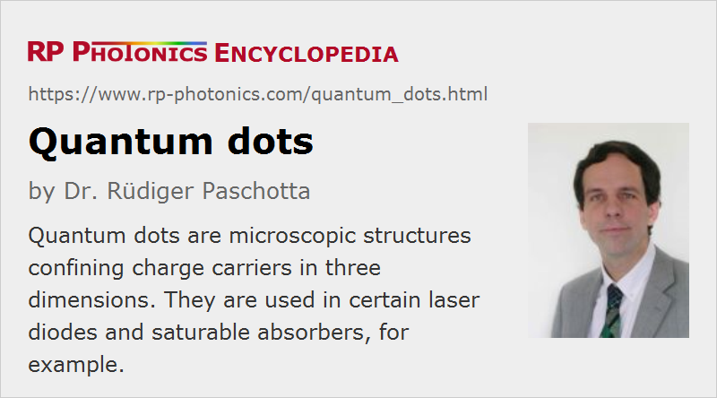

Quantum Dots
Definition: microscopic structures confining charge carriers in three dimensions
German: Quantenpunkte
Categories: photonic devices, quantum optics
How to cite the article; suggest additional literature
Author: Dr. Rüdiger Paschotta
A quantum dot is a very small structure, e.g. a semiconductor nanocrystal embedded in another semiconductor material, which can confine electrons or other carriers in all three dimensions.
The carrier confinement is a quantum effect. It totally changes the density of states for the confined particles, compared with the density of states for particles in a larger piece of the material. For an ideal isolated quantum dot, there are discrete energy levels, corresponding to a delta-shaped density of states with no states in between the delta peaks. Such a behavior is known from atoms; in this sense, quantum dots can be considered as a kind of artificial atoms where the energy levels can be adjusted by design, e.g. by controlling the quantum dot dimensions or the material composition. In reality, large ensembles of quantum dots are normally used, and their size distribution leads to a somewhat smeared-out density of states, i.e. to inhomogeneous broadening.
Quantum dots can be fabricated from semiconductors. This can even accidentally happen when thin quantum wells are fabricated with molecular beam epitaxy (MBE) or metal–organic chemical vapor deposition (MOCVD), where some fluctuations of the thickness can occur. Under certain conditions (Stranski–Krastanov growth of a lattice-mismatched material on some substrate, e.g. InAs on GaAs), quantum dots can be grown in a self-organized fashion, so that they acquire more consistent sizes and distribution. Subsequently, they are often overgrown with the substrate material. Typical dimensions of the often pyramidally shaped quantum dots are of the order of 5–20 nm; quantum dots are therefore considered to be a topic of nanotechnology. Their density can be of the order of 109 dots per square centimeter. In most cases, a large number of dots are simultaneously used in a device, although some quantum optics experiments require single quantum dots.
There are also techniques for solution processing of quantum dots. Here, some precursor compounds are dissolved in an organic solvent at high temperature. When the precursor is increasingly converted to monomers, the latter may become supersaturated in the solvent, so that nanocrystals start to nucleate and grow further. The resulting colloidal solution can then be used to fabricate a layer containing a substantial density of quantum dots. The main attraction of colloidally suspended quantum dots is the prospect of fabricating them cheaply in large amounts. This would be attractive e.g. for large light-emitting diodes, but other applications are also envisaged, e.g. in displays [8], where electrically excited quantum dots would provide the light emission of the pixels, removing the need for background illumination.
Position and size control of quantum dots is also possible by growth on patterned substrates.
Applications
Quantum dots are useful for a variety of applications:
- The perhaps oldest application of quantum dots is the formation of beautiful colors in stained glasses, e.g. in church windows.
- Quantum dots make possible the fabrication of laser diodes with very low threshold pump power and/or low temperature sensitivity.
- Quantum dots can be used in white light-emitting diodes (LEDs): they are excited with a blue or near-ultraviolet LED and emit e.g. red and green light (acting as a kind of phosphor), so that overall a white color tone is achieved.
- In semiconductor saturable absorber mirrors (SESAMs), quantum dots can serve as absorbers with a very low saturation fluence. Such quantum dot absorbers can also be contained in a glass matrix.
- Quantum dots can be parts of very sensitive photodetectors, and in the future they may function in efficient photovoltaic cells.
- In the context of quantum cryptography, quantum dots can serve as single-photon emitters.
- Quantum dots might also be suitable for performing quantum computations.
- The mentioned functions can also be realized in the context of quantum nanophotonics.
The so far technologically most important applications are probably those in LEDs and laser diodes. Quantum dot semiconductor lasers are expected to replace some of the currently used quantum well laser diodes.
Questions and Comments from Users
Here you can submit questions and comments. As far as they get accepted by the author, they will appear above this paragraph together with the author’s answer. The author will decide on acceptance based on certain criteria. Essentially, the issue must be of sufficiently broad interest.
Please do not enter personal data here; we would otherwise delete it soon. (See also our privacy declaration.) If you wish to receive personal feedback or consultancy from the author, please contact him e.g. via e-mail.
By submitting the information, you give your consent to the potential publication of your inputs on our website according to our rules. (If you later retract your consent, we will delete those inputs.) As your inputs are first reviewed by the author, they may be published with some delay.
Bibliography
| [1] | Y. Arakawa and H. Sakaki, “Multidimensional quantum well laser and temperature dependence of its threshold current”, Appl. Phys. Lett. 40 (11), 939 (1982), doi:10.1063/1.92959 |
| [2] | D. L. Huffaker et al., “1.3-μm room-temperature GaAs-based quantum-dot laser”, Appl. Phys. Lett. 73 (18), 2564 (1998), doi:10.1063/1.122534 |
| [3] | G. T. Liu et al., “Extremely low room-temperature threshold current density diode lasers using InAs dots in In0.15Ga0.85As quantum well”, Electron. Lett. 35, 1163 (1999), doi:10.1049/el:19990811 |
| [4] | H. Y. Liu et al., “High-performance three-layer 1.3-μm InAs-GaAs quantum dot lasers with very low continuous-wave room-temperature threshold currents”, IEEE Photon. Technol. Lett. 17 (6), 1139 (2005), doi:10.1109/LPT.2005.846948 |
| [5] | M. Scholz et al., “Non-classical light emission from a single electrically driven quantum dot”, Opt. Express 15 (15), 9107 (2007), doi:10.1364/OE.15.009107 |
| [6] | S. Qingjiang et al., “Bright, multicoulored light-emitting diodes based on quantum dots”, Nature Photon. 2, 717 (2008), doi:10.1038/nphoton.2007.226 |
| [7] | P. Morena et al., “Modeling of gain and phase dynamics in quantum dot amplifiers”, Opt. Quantum Electron. 40 (2-4), 217 (2008), doi:10.1007/s11082-008-9219-4 |
| [8] | K.-S. Cho et al., “High-performance crosslinked colloidal quantum-dot light-emitting diodes”, Nature Photon. 3, 341 (2009), doi:10.1038/nphoton.2009.92 |
| [9] | M. Toishi et al., “High-brightness single photon source from a quantum dot in a directional-emission nanocavity”, Opt. Express 17 (17), 14618 (2009), doi:10.1364/OE.17.014618 |
| [10] | W. W. Chow, M. Lorke and F. Jahnke, “Will quantum dots replace quantum wells as the active medium of chose in future semiconductor lasers?”, J. Sel. Top. Quantum Electron. 17 (5), 1349 (2011), doi:10.1109/JSTQE.2011.2157085 |
| [11] | F. Yue et al., “Stimulated emission from PbS-quantum dots in glass matrix”, Laser & Photon. Rev. 7 (1), L1 (2013), doi:10.1002/lpor.201200075 |
See also: quantum wells
and other articles in the categories photonic devices, quantum optics
|  |
If you like this page, please share the link with your friends and colleagues, e.g. via social media:
These sharing buttons are implemented in a privacy-friendly way!